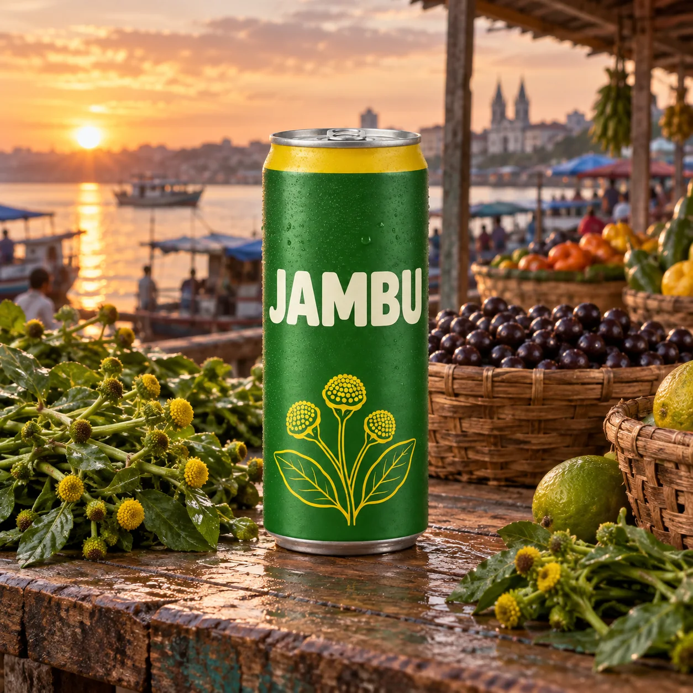
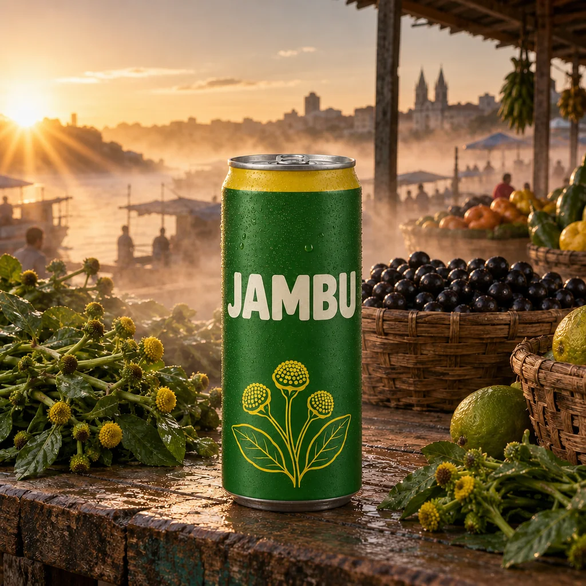
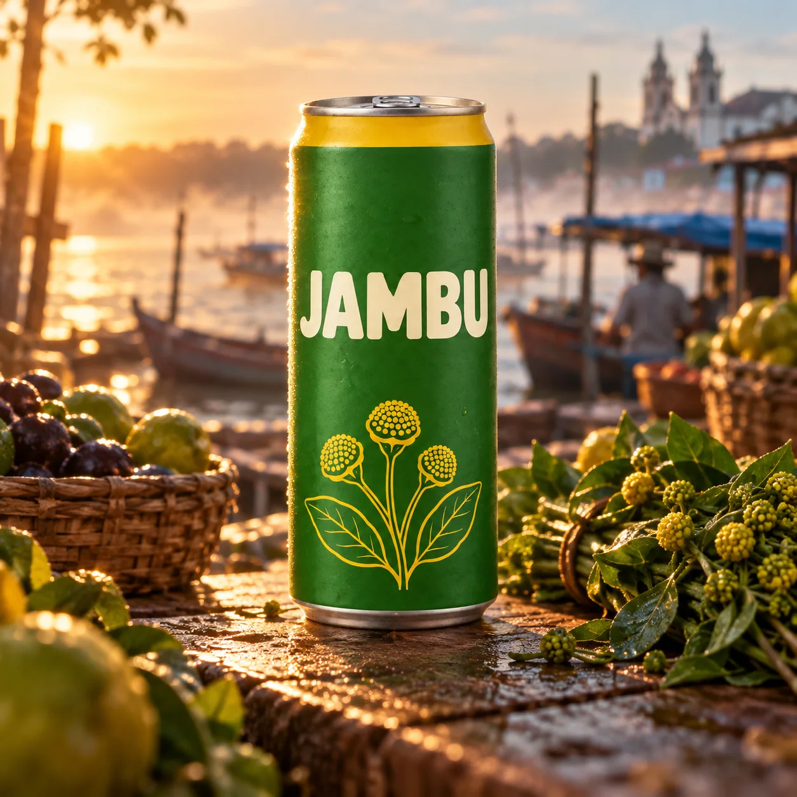
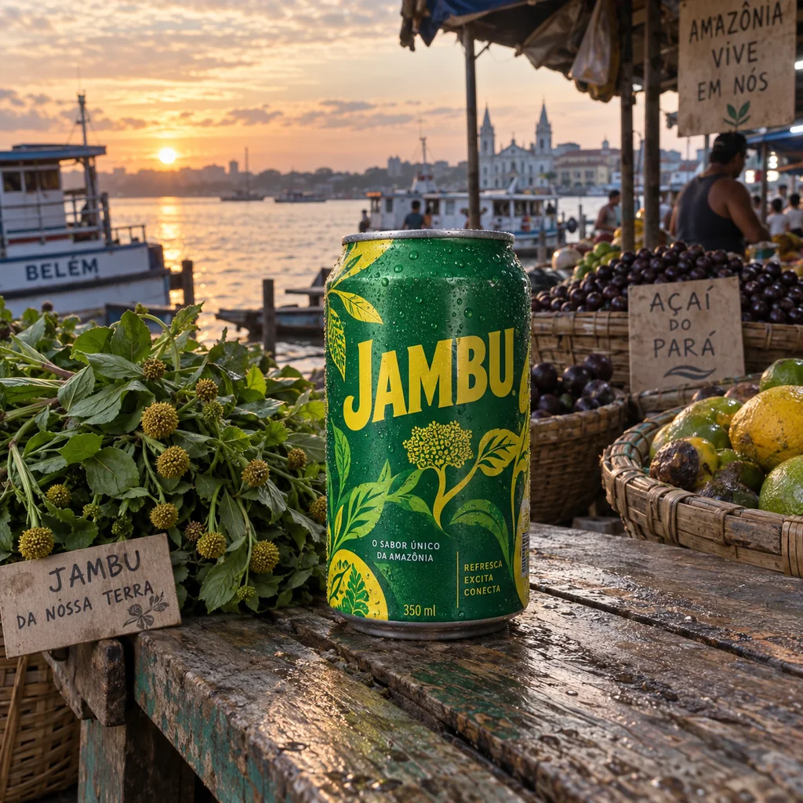
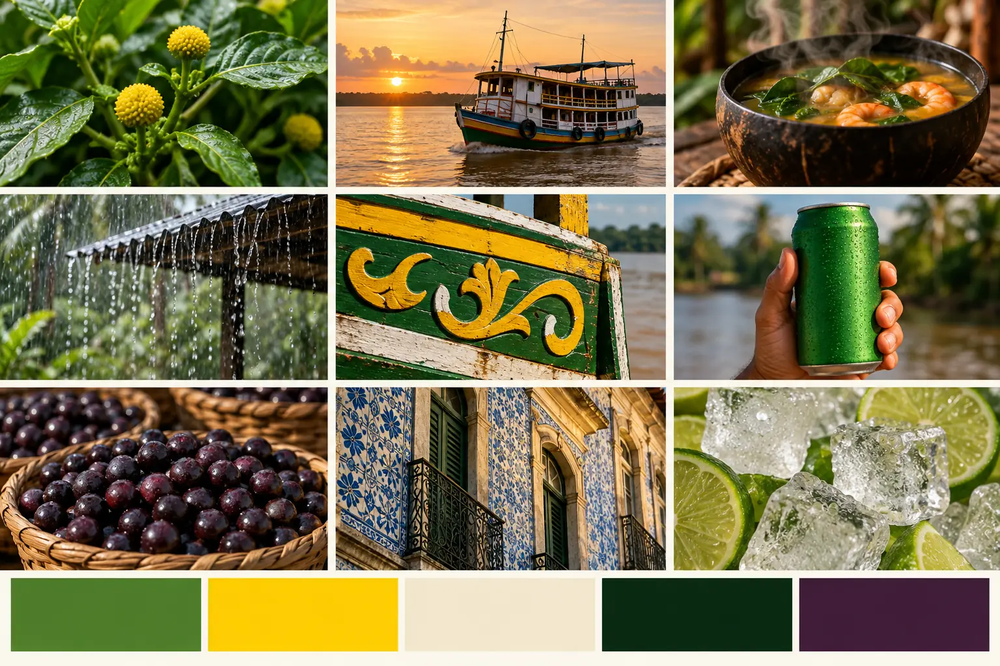
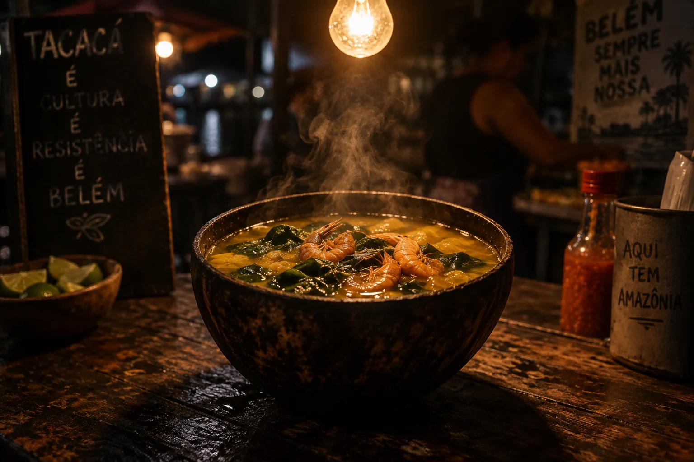
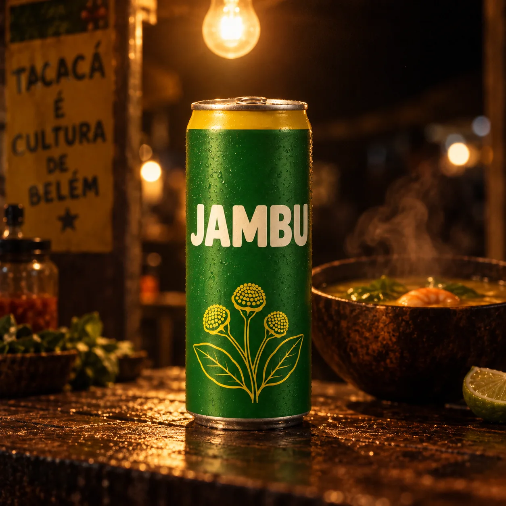
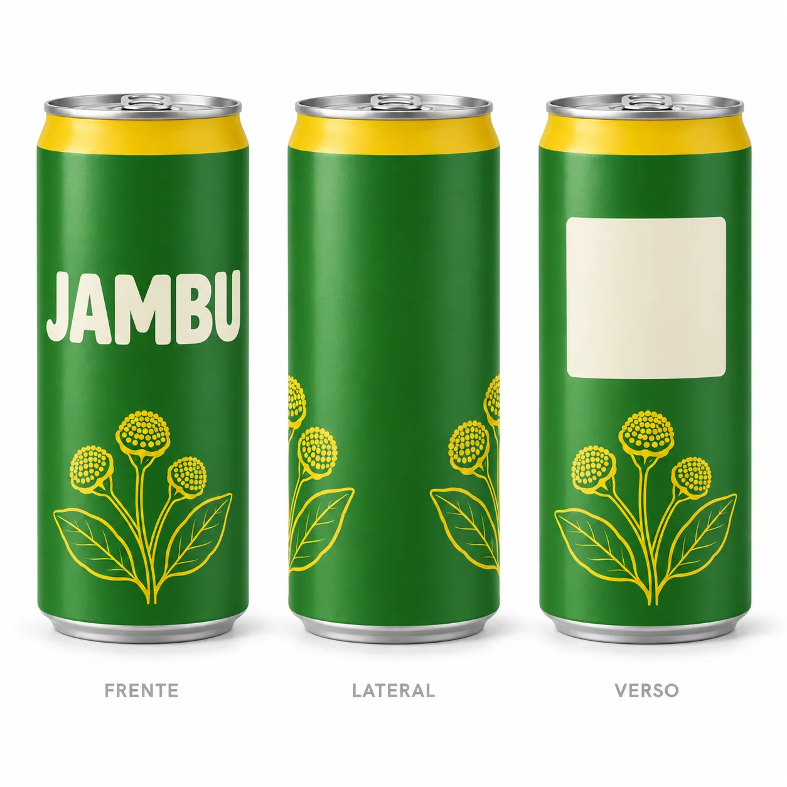

Quem abre um gerador de imagem pela primeira vez costuma digitar “lata de refrigerante verde numa feira” e ir ajustando no chute. Funciona para uma imagem solta. Não funciona para uma campanha: dez, vinte peças em que a lata precisa ser sempre a mesma, a protagonista precisa ter o mesmo rosto e o verde da marca não pode variar de uma peça para outra. Campanha é um sistema, e sistema começa antes do prompt: com um briefing, um conjunto de referências e uma imagem-mestra do produto.

Prompt usado
Studio packshot of a single slim 350ml aluminum soda can standing upright, perfectly frontal at eye level, centered on a seamless pure white background. The can body is matte leaf-green (#2F7D32) with a bright jambu-yellow (#F2C200) band around the top shoulder, and a simple yellow line illustration of small round jambu flower buds with two leaves near the bottom. Across the middle, the wordmark 'JAMBU' in bold rounded uppercase sans-serif letters, cream-white, large and perfectly legible. Brushed silver lid and pull tab. Soft diffused light from a large softbox above-left, a gentle vertical highlight on the left edge, soft contact shadow under the can. 85mm lens at f/8, everything in sharp focus, no condensation, no props. Clean e-commerce product photography, true-to-color.
A lata-base da Jambu: frontal, fundo branco, luz neutra, nenhum objeto em volta. Não é uma peça de campanha — é a referência que vamos anexar em quase todas as imagens deste curso. Repare no que ficou definido: lata fina, corpo verde-folha fosco, faixa amarela no ombro, nome JAMBU em creme e três botões de flor de jambu desenhados em linha amarela.
Neste módulo você prepara as três coisas que sustentam tudo o que vem depois: o modelo certo (e o que ele sabe fazer de diferente), o briefing traduzido em decisões visuais e o kit de referências — produto, estética e paleta — com nomes de arquivo que você vai reencontrar daqui a um mês.
1O que muda num modelo que entende a cena
O que é
Gerador “de sorteio” × modelo que raciocina
| Situação | Gerador clássico (só texto) | Modelo multimodal com raciocínio |
|---|---|---|
| Manter o mesmo produto | cada geração inventa uma lata nova | você anexa a lata-base e ela é preservada |
| Ajustar um detalhe | reescreve o prompt e torce | “troque só a cor da camiseta” — o resto fica |
| Colocar texto | letras tortas, palavras inventadas | slogan curto sai legível e na fonte descrita |
| Acrescentar um elemento (névoa, fumaça) | aparece “colado”, sem lógica de luz | a luz atravessa a névoa na direção certa (a sombra do produto ainda precisa ser pedida e conferida) |
| Várias referências | não aceita ou mistura tudo | produto + pessoa + estilo, cada uma com seu papel |
Por que aprender
O nome que se dá a isso é raciocínio espacial: antes de desenhar, o modelo monta uma noção de onde estão os objetos, de onde vem a luz e o que fica na frente de quê. Por isso uma instrução em português corrente — “acrescente névoa do rio com raios de sol vindo da esquerda” — produz uma névoa que recebe a luz do sol, com raios na direção certa, em vez de um efeito pintado por cima. (Nas sombras do próprio produto ele ainda falha com frequência, como a comparação abaixo mostra.) É essa capacidade que torna possível trabalho de cliente: você corrige uma parte sem destruir a outra.
Conceitos-chave em ação

Instrução de edição usada (sobre a imagem-base)
Place this exact can — same shape, colors, yellow top band, flower illustration and JAMBU wordmark — standing on a weathered wooden stall at a riverside open-air market in Belém, Brazil, at dawn, with baskets of fruit and bundles of fresh jambu herb with small yellow flower buds around it. Keep the can identical. No other text in the scene.

Instrução de edição usada (sobre a imagem-base)
Add a dense low morning mist drifting from the river across the stall, and move the sun: a low, hard morning sun now shines from the far LEFT side of the frame, with sharp rays cutting through the mist. Make the light behave physically on every object, including the can. Keep the can's design, the stall and all objects in place.
A imagem da direita é uma edição da esquerda com uma única instrução: acrescentar névoa do rio e raios de sol vindos da esquerda, pedindo que a luz se comporte fisicamente. O modelo resolveu sozinho a parte do ar: o sol foi para a esquerda, virou um leque de raios, a névoa subiu do rio entre os barcos e o fundo ficou lavado como numa manhã úmida. Mas confira a lata: com sol baixo e duro vindo da esquerda, o lado direito dela deveria escurecer e uma sombra deveria cair para a direita na madeira — e nada disso aconteceu; a lata continua iluminada por igual, como no estúdio. O modelo protege o objeto principal da cena e o trata quase como um recorte colado. É o limite prático de “entender a cena”: ele entende a atmosfera melhor que a luz sobre o produto. Se a sombra importa, peça-a com todas as letras (lado escuro, direção e comprimento da sombra) numa edição só para isso.
2Onde usar o Nano Banana Pro
O que é
O mesmo modelo aparece em vários lugares. O Google o oferece no próprio ecossistema, e plataformas de criação compram acesso em volume e o revendem dentro das suas interfaces — junto com outros modelos de imagem e vídeo. O modelo é o mesmo; a experiência e as condições mudam.
Onde encontrar e para que serve cada porta
| Onde | Tipo de acesso | Bom para | Confira na ferramenta |
|---|---|---|---|
| App Gemini (web e celular) | direto, Google | testar ideias rápido, editar conversando | limite diário, resolução de saída |
| Google AI Studio | direto, ambiente de desenvolvedor | controlar parâmetros, testar prompts longos e várias referências | cota, custo por imagem via API |
| Flow (Google) | direto, voltado a vídeo | gerar quadros-chave que viram vídeo | créditos, modelos de vídeo disponíveis |
| Plataformas de criação que integram o modelo | intermediário | ter imagem + vídeo + upscale no mesmo lugar, planos com gerações ilimitadas | preço do plano, se o modelo é a versão Pro, como marcar referências |
Por que aprender
Detalhes de interface mudam o resultado. Algumas plataformas deixam você nomear cada referência e citá-la no prompt (algo como @lata e @heroina), o que evita o modelo confundir qual imagem é o produto e qual é o estilo. Outras oferecem um campo de “personagem” que aproveita só a pessoa e ignora o fundo. Quem entende essas pequenas diferenças erra menos e gasta menos.
Conceitos-chave em ação
✓ Antes de escolher, verifique
- se o modelo listado é o Pro (e não uma versão mais antiga ou mais leve)
- quantas imagens de referência dá para anexar de uma vez
- se dá para escolher a proporção (1:1, 4:5, 9:16…) e a resolução
- se as gerações “ilimitadas” valem para esse modelo
✗ Armadilhas comuns
- achar que só existe um lugar “certo” para usar
- comparar plataformas com prompts diferentes
- deixar a resolução no mínimo para economizar e descobrir na entrega
- confiar em preço ou limite que você leu num vídeo antigo
3A hierarquia do prompt: objeto → contexto → técnica
O que é
Em campanha de produto, o que não pode dar errado é o objeto. Por isso a regra é sempre a mesma: descreva primeiro o que vende, depois onde ele está, e só no fim como a câmera vê a cena.
Por que aprender
Quando o prompt começa pela luz e pelo clima (“luz dourada, névoa, clima cinematográfico, uma lata…”), o modelo gasta a atenção no clima e trata o produto como detalhe — e o rótulo sai deformado. Invertendo a ordem, o produto fica protegido e a técnica vira acabamento. A hierarquia também deixa o prompt fácil de editar: para trocar o cenário você mexe só no bloco 2; para mudar a câmera, só no bloco 3.
Conceitos-chave em ação
Instrução de edição usada (sobre a imagem-base)
Place this exact can — same shape, colors, yellow top band, flower illustration and JAMBU wordmark — standing on a weathered wooden stall at a riverside open-air market in Belém, Brazil, at dawn, with baskets of fruit and bundles of fresh jambu herb with small yellow flower buds around it. Keep the can identical. No other text in the scene.

Instrução de edição usada (sobre a imagem-base)
Place this exact can — same shape, colors, yellow top band, flower illustration and JAMBU wordmark — standing on a weathered wooden stall at a riverside open-air market in Belém, Brazil, at dawn, with baskets of fruit and bundles of fresh jambu herb with small yellow flower buds around it. Low-angle shot from table height, the can towering in the foreground, the river and wooden boats softly blurred behind it. 35mm lens at f/2.8. Early golden sunlight from behind-left creating a warm rim light along the can's edge, light morning river mist. Cool blue-green shadows, warm highlights, subtle film grain, premium beverage advertising photography. Keep the can identical. No other text in the scene.
As duas são edições da mesma lata-base com o mesmo texto de objeto e de contexto; a da direita recebeu só o terceiro bloco (ângulo baixo, 35 mm f/2.8, contraluz, névoa, grão). Repare que a da esquerda não saiu “neutra”: sem técnica, o modelo decidiu por você um pôr do sol, a igreja ao fundo e a lata no meio da banca. É bonito, mas não foi escolha sua. Na da direita, as decisões são suas: a câmera desce à altura da mesa, a lata cresce no quadro, a névoa cobre o rio e a luz de trás acende a borda da lata.
O prompt da direita, separado nos três blocos
[1 OBJETO] Place this exact can — same shape, colors, yellow top band,
flower illustration and JAMBU wordmark —
[2 CONTEXTO] standing on a weathered wooden stall at a riverside open-air
market in Belém, Brazil, at dawn, with baskets of fruit and
bundles of fresh jambu herb with small yellow flower buds around it.
[3 TÉCNICA] Low-angle shot from table height, the can towering in the
foreground, the river and wooden boats softly blurred behind it.
35mm lens at f/2.8. Early golden sunlight from behind-left creating
a warm rim light along the can's edge, light morning river mist.
Cool blue-green shadows, warm highlights, subtle film grain,
premium beverage advertising photography. Keep the can identical.
4O briefing da Jambu, traduzido em imagem
O que é
A Jambu é a marca fictícia deste curso: um refrigerante artesanal de Belém do Pará, cítrico, feito com jambu — a erva que deixa a boca formigando, conhecida do tacacá e do pato no tucupi. Todo o curso constrói a campanha de lançamento dela. O briefing abaixo é o ponto de partida, e cada linha já vem com a tradução visual que vai para o prompt.
Briefing Jambu → decisões visuais
| Item do briefing | O que o cliente disse | Tradução visual (vai para o prompt) |
|---|---|---|
| Produto | refrigerante artesanal de jambu, lata fina 350 ml | lata verde-folha fosca, faixa amarela, flor de jambu em traço |
| Origem | orgulho de Belém, nada de clichê de “selva” | feira à beira-rio, barcos de madeira, azulejo, chuva da tarde |
| Sensação | refresca e formiga | gotas geladas, gelo, limão, respingo; expressão de surpresa |
| Público | 20 a 35 anos, urbano, curioso por sabor regional | luz de fim de tarde, pessoas reais, cores vivas mas não neon |
| Tom | orgulhoso, divertido, sem ser caricato | sorriso aberto, ângulos com energia, nada de fantasia exótica |
| Entregas | packshot, peças de feed e story, infográfico, roteiro de comercial | formatos 1:1, 4:5, 9:16 e 16:9 planejados desde o início |
| Restrições | verde e amarelo sempre fiéis; nome escrito certo | cores por HEX e texto entre aspas (módulo 2-1) |
Por que aprender
Uma frase da fonte que vale guardar: a IA só mostra o que você pede. Quanto mais detalhe, mais específico o resultado — mas para saber quais detalhes pedir você precisa ter uma visão antes de abrir a ferramenta. O briefing é essa visão por escrito. Ele também é o que você mostra ao cliente para combinar a direção antes de gastar gerações.
Conceitos-chave em ação
5Referência: o recurso que não tem substituto
O que é
Uma referência é qualquer imagem que você anexa ao prompt para o modelo copiar algo dela: o produto (forma, rótulo, cor), a pessoa (rosto, cabelo, pele), ou o estilo (luz, paleta, grão). Modelos como o Nano Banana Pro aceitam várias de uma vez, e o que separa um resultado confuso de um resultado preciso é dizer o papel de cada uma.
Tipos de referência e como citá-las no prompt
| Referência | O que ela fixa | Como escrever |
|---|---|---|
| Produto (lata-base) | forma, rótulo, cores, proporção | “Use the can from image 1 exactly as it is — same label and colors.” |
| Personagem (heroína-base) | rosto, pele, cabelo, traços marcantes | “The woman from image 2 — keep her face and hair identical.” |
| Estilo / moodboard | luz, paleta, grão, clima | “Match the lighting and color palette of image 3, not its objects.” |
| Brand book | cores HEX, tipografia, logo | “Follow the colors and typography of image 4.” |
Por que aprender
Mesmo com um prompt detalhado, texto é interpretação: “lata verde com detalhes amarelos” cabe em mil latas diferentes. A referência fecha a interpretação. Para uma campanha, é a diferença entre “parecido” e “o mesmo produto”.
Conceitos-chave em ação

Prompt usado
A green soda can with yellow details and the word JAMBU on it, standing on a weathered wooden stall at a riverside open-air market in Belém, Brazil, at dawn, with baskets of fruit and bundles of fresh jambu herb around it.
Instrução de edição usada (sobre a imagem-base)
Place this exact can — same shape, colors, yellow top band, flower illustration and JAMBU wordmark — standing on a weathered wooden stall at a riverside open-air market in Belém, Brazil, at dawn, with baskets of fruit and bundles of fresh jambu herb with small yellow flower buds around it. Keep the can identical. No other text in the scene.
Mesmo cenário pedido (banca de feira ribeirinha, cestos e jambu). À esquerda, geração só por texto: o modelo desenhou a ideia dele de lata verde, com JAMBU em amarelo, folhas pelo rótulo e frases que ninguém pediu (“O sabor único da Amazônia”, “Refresca, excita, conecta”), e ainda espalhou placas escritas pela banca. À direita, edição com a lata-base anexada: faixa, flores e letra são as nossas. As duas são imagens bonitas; só a da direita mostra o produto do cliente.
✓ Referências que ajudam
- produto frontal, fundo limpo, luz neutra, rótulo legível
- pessoa de frente, rosto inteiro visível, sem óculos escuros
- uma referência por papel, com o papel dito no prompt
✗ Referências que atrapalham
- foto do produto em cenário cheio (o modelo copia o cenário)
- rosto cortado, de perfil ou com filtro pesado
- cinco imagens de estilo diferentes “para dar ideia”
6Moodboard e engenharia reversa de estilo
O que é

Prompt usado
Brand moodboard for a fictional craft soda from Belém do Pará, Brazil, laid out as a clean grid of nine photographs separated by thin white gutters on an off-white board. Tiles: fresh jambu leaves with small round yellow flower buds in close-up; a colorful wooden riverboat on a wide brown Amazon river at sunrise; a steaming gourd bowl of tacacá soup with green leaves; heavy tropical rain falling off a tin roof; hand-painted green and yellow boat lettering ornaments (no readable words); a hand holding a cold unbranded green can with condensation; dark purple açaí berries in a woven basket; colonial blue-and-white Portuguese tiles on an old façade in warm afternoon light; ice cubes with lime slices. Below the grid, a row of five flat color swatches without text: leaf green, bright yellow, cream, very dark green, deep açaí purple. Editorial, humid, vibrant, warm tropical light.
Moodboard da Jambu, gerado para o curso. Ele fixa o universo: jambu com flor, rio e barco, tacacá, chuva no telhado, letreiro pintado, mão com lata gelada, açaí, azulejo português, gelo com limão — e, embaixo, a paleta em cinco amostras (o módulo 2-1 dá o código HEX de cada uma). Numa campanha real você montaria o painel com fotos próprias ou de bancos licenciados. (Detalhe: a cuia do tacacá saiu como tigela de coco. Num moodboard isso pesa pouco, mas numa peça seria erro de cultura local, e é o tipo de coisa que você precisa conferir.)
Por que aprender
Muitas vezes você sabe o que quer — achou a foto num perfil, numa revista — mas não sabe descrever. A saída é a engenharia reversa: anexar a imagem a um assistente de texto e pedir que ele a descreva como um prompt (objeto, cenário, luz com direção e temperatura, lente, paleta, acabamento). Você ganha vocabulário na hora e aprende a nomear o que vê.
Pedido de engenharia reversa (cole num assistente de texto com a imagem anexada)
Objetivo: Transformar uma imagem de referência em descrição reutilizável de estilo.
Describe the attached image as an image-generation prompt, but only its STYLE, not its objects. Cover, in this order: 1) light source, direction, hardness and approximate color temperature in Kelvin; 2) lens and aperture it looks like; 3) camera angle; 4) color palette (3–5 colors); 5) surface textures; 6) film or digital finish (grain, contrast, halation). Output one paragraph in English, under 80 words, that I can append to a prompt about a different product.
Como verificar: O parágrafo não deve citar os objetos da foto (tacacá, cuia). Se citar, peça de novo: “remove all objects, keep only style”.
Conceitos-chave em ação

Prompt usado
Moody editorial food photograph at a night street-food stall in Belém, Brazil: a traditional dark gourd bowl (cuia) of steaming yellow tacacá soup with dark green jambu leaves and dried shrimp on a worn dark wooden table, lit by a single bare warm tungsten bulb hanging directly above, hard top light with deep falloff into black, glossy highlights on the broth, steam catching the light, amber and deep green palette. 50mm lens at f/2, shallow depth of field, grainy 35mm film look.

Instrução de edição usada (sobre a imagem-base)
Fully re-render this ENTIRE image as a new photograph, restaging this exact can in the following style: a night street-food stall in Belém, the can standing on a worn dark wooden table, lit by a single bare warm tungsten bulb (2700K) hanging directly above, hard top light with deep falloff into black, glossy specular highlights on the can's top rim, amber and deep green palette, a gourd bowl of steaming tacacá softly blurred in the background with steam catching the light. 50mm lens at f/2, shallow depth of field, grainy 35mm film look. Keep the can's shape, colors and JAMBU wordmark identical.
À esquerda, a “foto encontrada”: tacacá numa banca noturna, uma lâmpada nua em cima, sombras fundas, âmbar e verde. À direita, a lata-base editada com a descrição de estilo dessa referência: lâmpada nua quente de cima, queda rápida para o preto, brilho na tampa, mesa escura molhada. A luz e a paleta foram transferidas; a cuia ficou só como apoio de cena, ao lado da lata. Repare também na placa escrita à esquerda: nenhum dos dois prompts pediu texto, e o modelo inventou placas nas duas imagens. Quando isso atrapalhar, termine o prompt com No other text in the scene.
7Organize o kit: cartela de produto e nomes de arquivo
O que é
A lata-base mostra só a frente. Quando o comercial pedir a lata girando, de lado ou de costas, o modelo vai inventar o que não viu — a não ser que você tenha uma cartela de produto: a mesma lata em três vistas, fundo igual, luz igual.

Instrução de edição usada (sobre a imagem-base)
Turn this packshot into a product reference sheet on the same pure white background: the same can shown three times side by side at the same size and height — front view, side view rotated 90° (showing how the yellow band and the jambu flower illustration wrap around the cylinder), and back view with a small blank rectangular panel for nutrition information. Same soft studio lighting, same colors, orthographic look with no perspective distortion. A small grey caption under each can: 'FRENTE', 'LATERAL', 'VERSO'.
Cartela da lata Jambu feita a partir da lata-base: frente, lateral e verso lado a lado, com a mesma luz e o mesmo fundo. Como a lateral e o verso nunca foram mostrados, o modelo decidiu como eles são: na lateral, a ilustração de jambu aparece cortada nas bordas, dando a volta no cilindro; no verso, repetiu as flores e deixou um quadro creme para a tabela nutricional. Aprove essas decisões com o cliente, porque a partir daqui elas viram referência. Numa marca real, as vistas viriam da embalagem de verdade ou do arquivo 3D do fornecedor.
Por que aprender
Consistência depende de você anexar sempre a mesma referência. Se na terça você usou lata_final2.png e na quinta lata_final_ok.png, pequenas diferenças se acumulam peça a peça. Um padrão de nome resolve isso e ainda registra de onde cada imagem veio.
Conceitos-chave em ação
Padrão de nome: marca_tipo_assunto_variação_v##
| Parte | Valores usados na Jambu | Exemplo |
|---|---|---|
| tipo | ref (referência), gen (geração), edit (edição), final |
jambu_ref_lata_frente_v01.png
|
| assunto | lata, heroina, mood, brandbook, feed, story |
jambu_ref_heroina_base_v02.png
|
| variação | o que distingue esta das irmãs |
jambu_edit_heroina_camiseta-amarela_v01.png
|
| v## | sobe a cada refação, nunca sobrescreve |
jambu_final_feed_4x5_v03.png
|
Estrutura de pastas do projeto
jambu/ 00_briefing/ briefing.md, moodboard.png 01_refs/ lata_frente, lata_lateral, lata_verso, heroina_base, brandbook 02_geracoes/ tudo o que sair do modelo, com o prompt em .txt ao lado 03_aprovadas/ só o que o cliente aprovou 04_entregas/ peças finais por formato (1x1, 4x5, 9x16, 16x9)
Prática guiada: monte o kit de referências da sua marca
Você vai sair desta prática com a mesma coisa que a Jambu tem agora: briefing, moodboard, uma imagem-base do produto e uma cartela. Use a Jambu ou um produto seu (bebida, cosmético, café, qualquer embalagem).
Roteiro
- Preencha a tabela de briefing (7 linhas) com a coluna de tradução visual.
- Monte o moodboard: 9 imagens + 5 cores. Pode gerar, como fizemos, ou juntar fotos licenciadas.
- Gere a imagem-base do produto com o molde abaixo: frontal, fundo branco, luz neutra, sem objetos.
- Confira o rótulo letra por letra. Se estiver errado, gere de novo antes de seguir — tudo depende dela.
- Edite a base para criar a cartela frente/lateral/verso.
- Teste a hierarquia: coloque o produto num contexto só com objeto + contexto; depois acrescente a técnica. Compare.
- Salve tudo com o padrão de nomes e o prompt em .txt ao lado.
Molde da imagem-base do produto
Objetivo: Gerar a referência neutra que será anexada em todas as peças.
Studio packshot of a single <tipo de embalagem e tamanho> standing upright, perfectly frontal at eye level, centered on a seamless pure white background. The <embalagem> is <material e acabamento> in <cor principal (#HEX)> with <detalhe de cor (#HEX)>, and <ilustração ou padrão do rótulo>. Across the middle, the wordmark '<NOME>' in <estilo de letra>, <cor>, large and perfectly legible. Soft diffused light from a large softbox above-left, soft contact shadow under the product. 85mm lens at f/8, everything in sharp focus, no props. Clean e-commerce product photography, true-to-color.
Como verificar: Nome escrito certo? Produto inteiro no quadro, sem cortar a tampa ou a base? Fundo realmente branco e sem objetos? Se sim, essa é a sua referência — renomeie como marca_ref_produto_frente_v01.
Teste da hierarquia (anexe a imagem-base)
Objetivo: Ver na prática o que o bloco de técnica acrescenta.
Place this exact can — same shape, colors, label and wordmark — standing on <superfície> in <lugar e hora do dia>, with <2–3 objetos do universo da marca> around it. --- versão 2: acrescente ao final --- <ângulo de câmera>. <lente> at <abertura>. <fonte de luz, direção e cor>. <atmosfera: névoa, vapor, chuva>. <acabamento: grão, contraste, tipo de fotografia>. Keep the product identical. No other text in the scene.
Como verificar: O rótulo ficou idêntico nas duas versões? A técnica mudou o clima sem deformar o produto?
Lição de casa
Você é o diretor de arte de uma marca que vai lançar um produto novo. Antes de qualquer peça, o cliente quer aprovar a direção: o que você vai mostrar, com que clima e com que produto-referência.
Nível básico (obrigatório)
- Escreva o briefing em tabela (produto, origem, sensação, público, tom, entregas, restrições) com a tradução visual de cada linha.
- Monte o moodboard com 9 imagens e 5 cores.
- Gere a imagem-base do produto com o molde e confira o texto do rótulo.
- Gere duas versões em contexto (objeto + contexto; objeto + contexto + técnica) e escreva 3 frases sobre o que a técnica mudou.
- Organize a pasta com o padrão de nomes e os prompts em .txt.
Nível avançado (desafio)
- Engenharia reversa: escolha 2 fotos que você admira, extraia a descrição de estilo de cada uma com o pedido do módulo e aplique ambas à sua imagem-base. Compare o que foi transferido (luz? paleta? grão?) e o que o modelo ignorou.
- Teste de porta de entrada: rode o mesmo prompt com a mesma referência em duas plataformas que ofereçam o modelo. Anote diferenças de cor, nitidez, fidelidade do rótulo e facilidade de anexar e nomear referências.
Entregue/guarde: Pasta com briefing, moodboard, imagem-base, cartela, as duas versões em contexto e um parágrafo de apresentação para o cliente. Ela é a base dos módulos 1-2 e 2-1.
Teste sua decisão
1. Você escreveu: “Luz dourada cinematográfica, névoa, clima de fim de tarde, uma lata verde numa feira”. O rótulo saiu deformado. Qual a primeira correção?
Consultar a explicação
O prompt começou pelo clima e deixou o produto por último. A hierarquia objeto → contexto → técnica dá mais peso ao que o cliente não aceita errado; a referência anexada fixa o rótulo.
2. Qual destas imagens é a melhor candidata a referência de produto?
Consultar a explicação
Referência boa é neutra e completa: o modelo copia o que vê. Na foto da feira ele tenderia a copiar o cenário junto; no close faltaria o produto inteiro.
3. Você tem uma foto de outro produto com a luz exata que quer, mas não sabe descrevê-la. O que faz?
Consultar a explicação
Engenharia reversa: você extrai luz, lente, paleta e acabamento em palavras e aplica ao seu produto. Anexar como referência de produto faria o modelo copiar o objeto errado.
Responder não marca a leitura nem bloqueia o próximo módulo.
O que levar desta aula
- Modelos como o Nano Banana Pro entendem a cena: aceitam referências, obedecem a edições em linguagem comum e escrevem texto.
- Ordem do prompt: objeto → contexto → técnica. O produto vem primeiro porque é o que não pode sair errado.
- Referência não tem substituto: texto descreve, referência fixa. Diga o papel de cada imagem anexada.
- Briefing traduzido em decisões visuais é a sua visão por escrito — a IA só mostra o que você pede.
- Sem vocabulário para um estilo? Engenharia reversa: peça a descrição da imagem como prompt.
- Imagem-base neutra + cartela + nomes padronizados = consistência na campanha inteira.